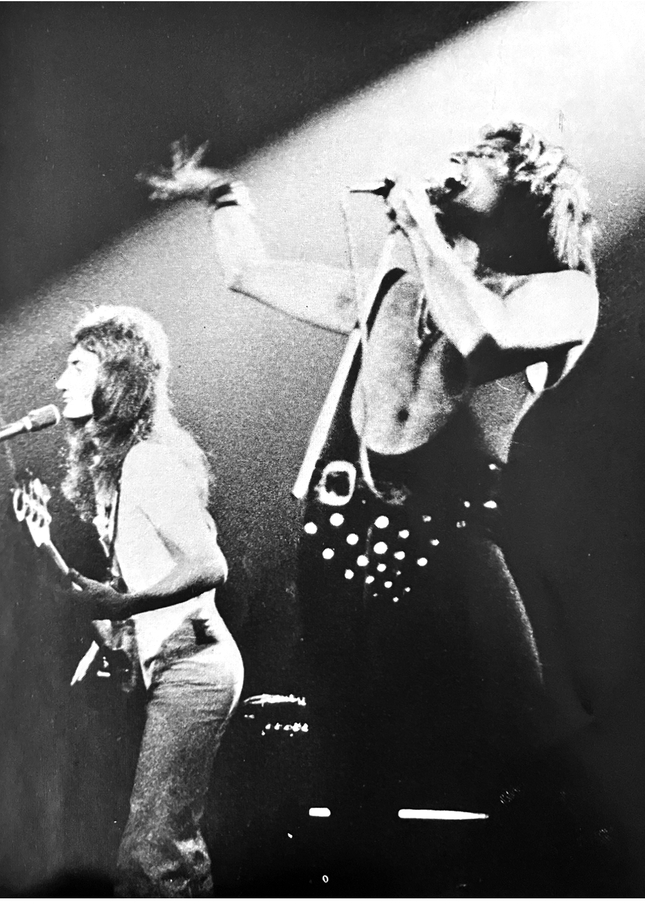

Vol. 5 — Autumn 1976

A Freddie-produced single for Eddie Howell, titled Man from Manhattan, is mentioned in a short article. Brian also played guitar on the single. It's also explained that the Japanese single release of See What A Fool I've Been that was mentioned in the prior issue has been cancelled "due to unforeseen circumstances", with no elaboration. The same article mentions that the tapes for A Day At The Races have not been received in Japan yet, so the Japanese album release will be pushed back to January 1977.
The age-old brawl between fans who like a band for their music vs. fans who like a band for their looks and style seems to be a hot topic in this issue. An opinion piece written by the Fan Club staff themselves comes to the conclusion that "unfortunately, we have to say that Queen fans are superficial." A bitter letter that appears in the members' section notes a fan's decision to leave the fan club due to lack of substance. Another, more cheerful letter writes about a missed connection—apparently they supposedly had an encounter with a blond foreign man who looked just like Roger and were wondering if anyone else had run into this stranger.
Looking Back on 1976 — by Hamasaki of Warner Pioneer